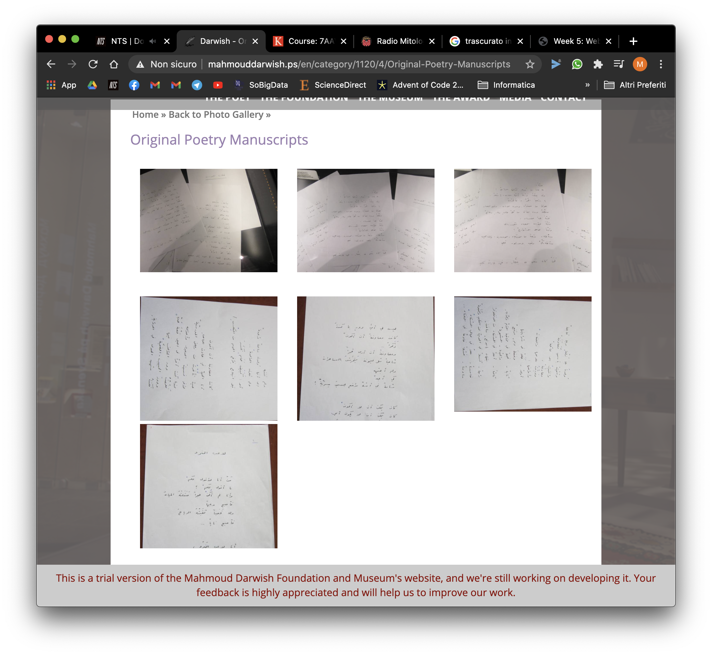

Mahmoud Darwish Museum
Mahmoud Darwish Museum is a Museum Foundation in the memory of a Palestinian poet, journalist and writer.
Content
The website has the classic structure of a museum's website, with a home, an about, the contacts page, and other pages for the Foundation and the Museum itself. From the nav bar we can infer that a prize is dedicated to Darwish.
Homepage
The homepages presents a full-screen gallery showing the interior of the building. The quality of the photos is quite poor, suggesting that the organization has not access to much funds, or that it choosed not to invest them in the communication.
Scrolling down we can find a calendar that must serve for the events, but in the english version of the website we cannot see them. We also notice that the scroll action's response is too much emphasized, by consequence is hard to stop at the desired point of the page.
Next, we find a section about the poet and the award, with a link to some selected scripts. We expected to find the texts by the winners of the award, but there are three poems by Darwish. Each link have different font settings: that's a visual error, because they all belong to the same category. In addition, I would suggest a unordered list and of course a text-align:left, because the epigraph layout is confusing (are we reading a poem? Is it a quotation?).
At the bottom of the page there is a slideshow with the shop's merchandise: cups, sweatshirts and other gadgets.
Archive
The collection of the website consists in a set of youtube medias such as a 3D virtual tour (in video format) and a documentary; in addition, we can take a simple street-view tour inside the building. In reality, only the conferences hall is visible. The english version is missing, so we cannot read the comments, if we don't know the Arabic.
Then, there is a photo gallery divided in some sections, many of them containing home-made photos, of which many of them are rotated and distorted by the perspective.
The audio gallery is empty, at least for the english version of the site.
Comment
The website's construction is very poor: the media are presented in a careless way. In the bottom of the window a message informs that the website is under developement, but probably a communication team is missing, and this implies a lower quality of the product. The conflicts with the english version suggest that the public they're addressing is a local one, by consequence the international part is left aside.
What saddens me is the very poor care of the contents, that discourages me to explore the contents of the website. I think that Visual Communication is fundamental for the preservation and the communication of the Cultural Heritage, because it attracts people and make them interested in it. In addition, it also enhances it.
I think that a digital archive of the manuscripts by Darwish, with a working multilanguage function, could be useful for the foundation, because it will help to communicate a cultural content outside the local community they're addressing now.